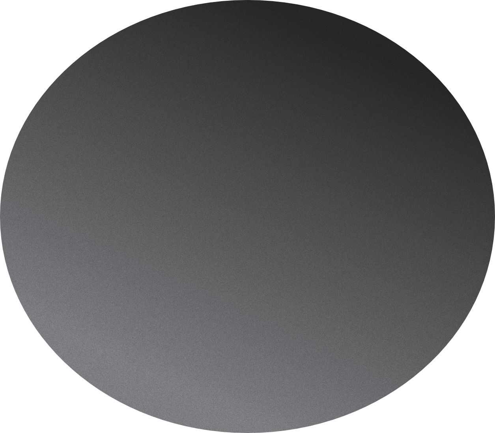

Ik wil op vakantie. Niet ergens in Spanje, of een roadtrip door Italië. Nee. Ik wil op vakantie van wifi. Want eerlijk is eerlijk: we leven online. Mijn rooster staat online. Mijn huiswerk staat online. Mijn cijfers staan online. Mijn berichten staan online. Mijn agenda staat online. En als ik ergens wil inloggen, moet ik soms eerst bewijzen dat ik mezelf ben via een apparaat dat ik vervolgens weer moet meenemen om te bewijzen dat ik mezelf ben. Een authenticator. Een klein woord, maar een GROOT probleem. Je telefoon moet altijd mee, zelfs als ik even rust wil van het constant bereikbaar zijn voor mensen waar je niet bereikbaar voor wilt zijn.
En dat is precies het probleem. Je kunt wel op vakantie gaan, maar je bent nooit echt weg. Je moet steeds je telefoon checken of je schoolrooster is veranderd. Of je krijgt weer een berichtje van je werk dat er iets is veranderd. Een blauw vinkje, een pop-up, een melding. Alles vraagt om je aandacht.
Stel je voor dat je even op vakantie kan van die wifi. Even weg van alle bereikbaarheid. Niemand hoeft zich zorgen te maken en niemand hoeft te weten waar je bent. Daarom bestaat Off Airline. Stel je voor dat je op vakantie gaat met het vliegtuig, maar dit keer vlieg je naar een wereld zonder wifi. Geen blauwe vinkjes. Geen: “Waar ben je? Het eten is bijna klaar! Geen: “Kan je even snel reageren?” Geen melding van werk dat bowlingbaan 8 kapot is en dat die melding je vakantie onderbreekt. Je stapt het vliegtuig uit… en voor het eerst hoef je nergens in te stappen. Geen oneindigheid van TikTok scrollen. Geen Dyflexis die een melding geeft dat je dienst weer is veranderd. Geen DigiD waarvoor je een telefoon nodig hebt om bij belangrijke informatie te komen. Geen HVA-app waarvoor je weer een authenticator nodig hebt om in te loggen. Maar in de wereld van Off Airline kijk je samen met je vrienden films. Je hoeft je werkrooster niet elke dag opnieuw te zien. Je krijgt belangrijke informatie gewoon in een brief. Je schoolrooster zie je iedere week op papier in de aula. En alle nieuwe muziek kun je gewoon op een betaalbare cassetteplayer luisteren. Een wereld waarin je telefoon niet weet waar je bent. Een wereld waarin je niet constant bereikbaar hoeft te zijn. Dus, beste lezer, ga mee op vakantie. Niet ergens in Spanje, of een roadtrip door Italië. Maar op een vakantie van wifi.